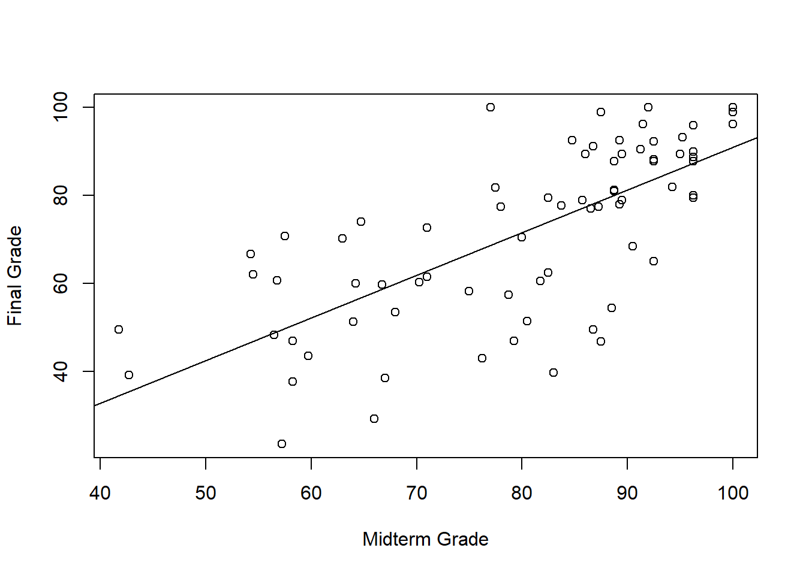
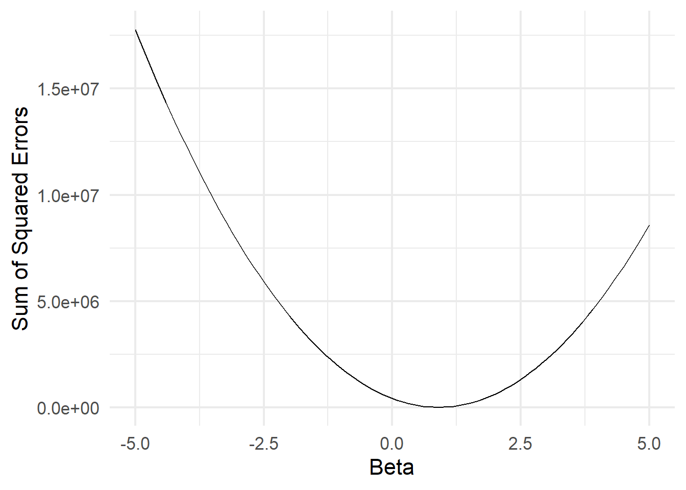

Calculus (Just The Essentials)
The Linear Model
The Linear Model

The Linear Model
\[Y = X\beta + \varepsilon\]

The Linear Model
Partitioning the outcome into two parts – the part we can explain, and the part we’re ignoring:
\[\underbrace{Y}_\text{outcome} = \underbrace{X\beta}_\text{explained} + \underbrace{\varepsilon}_\text{unexplained}\]
The Linear Model
Partitioning the outcome into two parts – the part we can explain, and the part we’re ignoring:
\[\underbrace{Y}_\text{outcome} = \overbrace{X}^\text{explanatory variable}\beta + \varepsilon\]
The Linear Model
Partitioning the outcome into two parts – the part we can explain, and the part we’re ignoring:
\[\underbrace{Y}_\text{outcome} = \overbrace{X}^\text{explanatory variable}\underbrace{\beta}_\text{parameter} + \varepsilon\]
The Linear Model
Partitioning the outcome into two parts – the part we can explain, and the part we’re ignoring:
\[\underbrace{Y}_\text{outcome} = \overbrace{X}^\text{explanatory variable}\underbrace{\beta}_\text{parameter} + \overbrace{\varepsilon}^\text{residual}\]
Our challenge for today: how do we estimate the \(\beta\) parameter? What is the “best” slope for the line of best fit?
class: center, middle
Let’s play around a little bit with R/week-07/line-of-best-fit.Rmd.
class: center, middle
Calculus
An Optimization Problem
–
We have a function that we want to minimize.
\[SSE = \sum (Y - X\beta)^2\] Here’s what that function looks like:

–
Key Insight: Function is minimized when the slope “switches” from decreasing to increasing. Exactly at the point where the slope equals zero.
class: center, middle
Slopes
Slopes
What is the slope of \(f(x) = 3x + 2\)?
–
The slope of a linear function (a straight line) is measured by how much \(y\) increases when you increase \(x\) by \(1\). In this case, \(3\).
Linear Functions
Find the slope of each function:
\(y = 2x + 4\)
\(f(x) = \frac{1}{2}x - 2\)
life expectancy (years) = 18.09359 + 5.737335 \(\times\) log(GDP per capita)
–
Remember:
Slope of a line \(= \frac{rise}{run}\)
| \(= \frac{\Delta Y}{\Delta X}\) |
|---|
| \(= \frac{f(x+h) - f(x)}{h}\) |
| ??? |
| Finding the slope of a line is easy. |
| Just wanted you to get comfortable with that last expression, because we’ll be see it again in a moment. |
| https://smartech.gatech.edu/bitstream/handle/1853/56031/effect_of_gdp_per_capita_on_national_life_expectancy.pdf |
Nonlinear Functions
.center[

]
Nonlinear functions are confusing and scary…
???
Nonlinear functions are confusing and scary. Sometimes the slope is positive. Sometimes it’s negative. Sometimes it’s zero. And unlike with linear functions, just looking at the formula gives you no indication what the slope is at any point.
Isaac Newton
???
Developed/Discovered: - The theory of universal gravitation - Three Laws of Motion - The Nature of Light - And, as a side project so he’d have mathematical notation for those other projects, he created calculus
NB: Newton did some of his best work while stuck at home during an epidemic. So, you know, get to it.
Gottfried Wilhelm Leibniz

???
Also invented calculus, but with better notation. A philosophical optimist who believed we lived in the “best of all possible worlds”, a sentiment parodied by Voltaire, and perhaps belied by the fact that Newton took all the credit for inventing calculus.
Newton and Leibniz’s Insight
Any curve becomes a straight line if you “zoom in” far enough.
–
???
https://knowyourmeme.com/memes/zoom-and-enhance
Zoom and Enhance…

Zoom and Enhance…

Zoom and Enhance…

Zoom and Enhance…Again…

Zoom and Enhance…Again…

Zoom and Enhance…Again…And Again…

Zoom and Enhance…Again…And Again…

–
It’s basically a straight line! And finding the slope of a straight line is easy…
???
The point is that, in the limit, as you shrink the interval smaller and smaller (infinitesimally small), the function is better and better approximated by a straight line. And we already know the slope of a straight line, so the problem is solved! (That line is called the tangent line FYI.)
Putting All That Into Math…
\[f'(x) = \lim_{h \to 0}\frac{f(x+h)-f(x)}{h}\]
Putting All That Into Math…
\[f'(x) = \underbrace{\lim_{h \to 0}}_\text{shrink h really small}\frac{\overbrace{f(x+h)-f(x)}^\text{the change in y}}{\underbrace{h}_\text{the change in x}}\]
–
This is called the derivative of a function.
Example
Let \(f(x) = 2x + 3\). What is \(f'(x)\)?
–
\[f'(x) = \lim_{h \to 0}\frac{f(x+h)-f(x)}{h}\]
\[= \lim_{h \to 0}\frac{2(x+h)+3-(2x+3)}{h}\]
–
\[= \lim_{h \to 0}\frac{2x+2h+3-(2x+3)}{h}\]
–
\[= \lim_{h \to 0}\frac{2h}{h}\]
–
\[= 2\]
???
Hey look what we discovered! The slope of a linear function equals the coefficient on \(x\)!
Now A Nonlinear One
Let \(f(x) = 3x^2 + 2x + 3\). What is \(f'(x)\)?
–
\[= \lim_{h \to 0}\frac{3(x+h)^2 + 2(x+h) + 3 - (3x^2 + 2x + 3)}{h}\]
\[= \lim_{h \to 0}\frac{3x^2 + 3h^2 + 6xh + 2x+ 2h + 3 - (3x^2 + 2x + 3)}{h}\]
\[= \lim_{h \to 0}\frac{3h^2 + 6xh + 2h}{h}\]
\[= \lim_{h \to 0}3h + 6x + 2\]
–
\[= 6x + 2\]
Solution

???
This function, \(f'(x)\), outputs the slope of \(f(x)\) at every point. You can “read off” the slope of \(f(x)\) from the vertical of \(f'(x)\).
class: center, middle
Good news! You don’t have to go through that process every time. Mathematicians have done it for you, and have discovered a whole bunch of useful shortcuts.
Shortcut 1: The Power Rule
If \(f(x) = ax^k\), then \(f'(x) = kax^{k-1}\)
–
Example:
If \(f(x) = 5x^4\), then \(f'(x) = 20x^3\).
–
Practice Problem:
Let \(f(x) = 2x^3\). What is \(f'(x)\)?
–
\[f'(x) = 6x^2\]
Shortcut 2: The Sum Rule
The derivative of a sum is equal to the sum of derivatives.
If \(f(x) = g(x) + h(x)\), then \(f'(x) = g'(x) + h'(x)\)
–
Example:
If \(f(x) = x^3 + x^2\), then \(f'(x) = 3x^2 + 2x\)
–
Practice Problem:
If \(f(x) = 2x^3 + x^2\), what is \(f'(x)\)?
–
\[f'(x) = 6x^2 + 2x\]
Shortcut 3: The Constant Rule
The derivative of a constant is zero
If \(f(x) = c\), then \(f'(x) = 0\)
–
Example:
If \(f(x) = 5\), then \(f'(x) = 0\).
–
Practice Problem:
If \(f(x) = 4x^2 + 3x + 5\), what is \(f'(x)\)?
–
\[f'(x) = 8x + 3\]
Shortcut 4: The Product Rule
The derivative of a product is a bit trickier…
If \(f(x) = g(x) \cdot h(x)\), then \(f'(x) = g'(x) \cdot h(x) + g(x) \cdot h'(x)\)
–
Example:
If \(f(x) = (2x)(x + 2)\), then \(f'(x) = 2x + 2(x+2) = 4x + 4\)
–
Practice Problem:
\(f(x) = (3x^2 + 6x)(x+2)\), what is \(f'(x)\)?
–
\[f'(x) = (3x^2 + 6x)(1) + (6x + 6)(x+2)\]
\[f'(x) = 3x^2 + 6x + 6x^2 + 6x + 12x + 12\]
\[f'(x) = 9x^2 + 24x + 12\]
Shortcut 5: The Chain Rule
If your \(f(x)\) is a function wrapped around another function…
If \(f(x) = g(h(x))\), then \(f'(x) = g'(x) \cdot h'(x)\)
–
“The derivative of the outside times the derivative of the inside.”
–
Example:
If \(f(x) = (2x^2 - x + 1)^3\), then \(f'(x) = 3(2x^2 - x + 1)^2 (4x - 1)\)
–
Practice Problem:
\(f(x) = \sqrt{x + 3} = (x+3)^{\frac{1}{2}}\), what is \(f'(x)\)?
–
\(f'(x) = \frac{1}{2}(x+3)^{-\frac{1}{2}}(1) = \frac{1}{2\sqrt{x+3}}\)
Other Derivative Rules
There’s a handy chart in Moore & Siegel:

.center[ ]
]
–
If you haven’t seen these before, it’s a lot to absorb. But practice helps.
???
Don’t freak out.
More Practice
Problem 1: Sum of Powers (Polynomial)
Let \(f(x) = 2x^3 + 4x + 79\). What is \(f'(x)\)?
Problem 2: Multiply By A Constant
Let \(f(x) = 3(x^2 + x + 42)\). What is \(f'(x)\)?
Problem 3: Product Rule
Let \(f(x) = (x^2 + 1)(x+3)\). What is \(f'(x)\)?
class: center, middle
I taught you that…
class: center, middle
…so you could do this.
Optimization
Let \(f(x) = 2x^2 + 8x - 32\). At what value of \(x\) is the function minimized?

–
Key Insight: Function is minimized when the slope “switches” from decreasing to increasing. Exactly at the point where the slope equals zero.
Optimization in Three Steps
–
1. Take the derivative of the function.
–
2. Set it equal to zero.
–
3. Solve for \(x\).
Optimization in Three Steps
1. Take the derivative of the function.
–
\[f(x) = 2x^2 + 8x - 32\]
–
\[f'(x) = 4x + 8\]
–
2. Set it equal to zero
\[4x + 8 = 0\]
–
3. Solve for \(x\).
–
\[x = -2\]
???
That second step is called the “First Order Condition”, or FOC.
Optimization in Three Steps

???
Bonus question: how do you know if it’s a maximum or a minimum? Take the second derivative! If it’s positive, then the slope is increasing (so it’s a minimum). If it’s positive, then the slope is decreasing (so it’s a maximum).
Now You Try It
Suppose that happiness as a function of jellybeans consumed is \(h(j) = -\frac{1}{3}j^3 + 81j + 2\). How many jellybeans should you eat? (Assume you can only eat a positive number of jellybeans).
–

class: center, middle
Wait, how do you know if it’s a maximum or a minimum?
Jellybeans Again
\(h(j) = \frac{1}{3}j^3 + 81j + 2\) and \(h'(j) = 81 - j^2\)

–
It’s a maximum when the slope is decreasing, and a minimum when then slope is increasing. How do you figure out if the slope is increasing or decreasing?
–
That’s right. You find the slope of the slope (aka the second derivative).
The Second Derivative Test
\(h(j) = \frac{1}{3}j^3 + 81j + 2\) and \(h'(j) = 81 - j^2\)
What is \(h''(j)\)? Is it positive or negative when you eat \(9\) jellybeans?
–
\[h''(j) = -2j\]

class: center, middle
Partial Derivatives
Partial Derivatives
What if you have a multivariable function?
\[f(x,y) = 2x^2y + xy - 4x + y -6\]
–
Same procedure! To get the derivative of a function with respect to \(x\) or \(y\), treat the other variable as a constant.
–
\[\frac{\partial f}{\partial x} = 4yx + y - 4\]
–
\[\frac{\partial f}{\partial y} = 2x^2 + x + 1\]
Now You Try…
Suppose happiness as a function of jellybeans and Dr. Peppers consumed is
\[h(j,d) = 8j -\frac{1}{2}j^2 + 2d - 3d^2 + jd + 100\] How many jellybeans should you eat? How many Dr. Peppers should you drink?
–
Intuitively, the \(jd\) term is an interaction effect. The effect of jellybeans on happiness increases if you also drink more Dr. Peppers.
Now You Try…
\[h(j,d) = 8j -\frac{1}{2}j^2 + 2d - 3d^2 + jd + 100\]
–
\[\frac{\partial h}{\partial j} = 8 - j + d = 0\]
\[\frac{\partial h}{\partial d} = 2 - 6d + j = 0\]
\[j = 8 + d\]
\[j = 6d - 2\]
\[d^* = 2\] \[j^* = 10\]
Visualizing That Function
\[h(j,d) = 8j -\frac{1}{2}j^2 + 2d - 3d^2 + jd + 100\]
class: center, middle
Back to our motivating example…
Back to our motivating example…
Error function we wanted to minimize:
\(f(b) = \sum (y - xb)^2\)
–
To compute the derivative, apply the sum rule and the chain rule…
\(\frac{\partial f}{\partial b} = \sum 2(y - xb)(-x) = \sum(2x^2b - 2xy)\)
–
Set that derivative equal to zero and solve:
\(0 = \sum (2x^2b - 2xy)\)
–
\(\sum (2xy) = \sum (2x^2b)\)
–
\(2 \sum (xy) = 2b\sum (x^2)\)
–
\(b = \frac{\sum xy}{\sum x^2}\)
???
Note: suppressing index notation for the brains of the students
Back to our motivating example…
The Linear Model:
\[y = x\beta + \varepsilon\] The thing we want to minimize:
\[SSE = \sum (y - x\beta)^2\] The solution to the minimization problem:
\[b = \frac{\sum xy}{\sum x^2}\]
–
Some terminology:
- \(\beta\) in that first equation is called the estimand. It’s the thing we’re trying to estimate.
- \(b\) in that final equation is called the estimator, or the estimating equation. It’s the procedure we use to produce an estimate.
The Linear Model is Everywhere
–
OLS / Regression Analysis (POLS 7014) = The Linear Model
MLE / Logit / Probit / Count Models (POLS 8501) = The Linear Model + another function
t-tests = The Linear Model + a binary predictor
Instrumental Variables = Two Linear Models
Regression Discontinuity = Two Linear Models
Matching = The Linear Model + Weights
Fixed Effects / Random Effects / ANOVA = The Linear Model + Categorical Predictor Variables
Difference-in-differences = The Linear Model + Time
–
Statistical modeling can seem pretty daunting when you think about it as a bunch of tests with no obvious connections. But fundamentally, the linear model is what unifies all these approaches…
class: center, middle
Back to the R script!